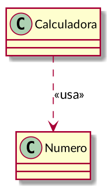

Relaciones entre clases Python
Ricardo Pérez López
IES Doñana, curso 2020/2021
1 Relaciones básicas
1.1 Introducción
Los objetos de un programa interactúan entre sí durante la ejecución del mismo, por lo que decimos que los objetos se relacionan entre sí.
Las relaciones entre objetos pueden ser de varios tipos.
Por ejemplo, cuando un objeto envía un mensaje a otro, tenemos un ejemplo de relación del tipo usa (el primer objeto «usa» al segundo).
Otras veces, los objetos contienen a otros objetos, o bien forman parte de otros objetos.
Finalmente, a veces las relaciones entre los objetos son meramente conceptuales:
- Son relaciones que no se reflejan directamente en el código fuente del programa, sino que aparecen durante el análisis del problema a resolver o como parte del diseño de la solución, en las etapas de análisis y diseño del sistema.
A la relación específica que se da entre dos objetos concretos se denomina enlace.
Cuando una o varias instancias de una clase está relacionada con una o varias instancias de otra clase, también podemos decir que ambas clases están relacionadas.
Una relación entre clases representa un conjunto de posibles relaciones entre instancias de esas clases (un conjunto de enlaces).
Las relaciones entre clases se pueden representar gráficamente en los llamados diagramas de clases.
Esos diagramas se construyen usando un lenguaje de modelado visual llamado UML, que se estudia con detalle en el módulo Entornos de desarrollo.
Entre otras cosas, el lenguaje UML describe los distintos tipos de relaciones entre clases que se pueden dar en un sistema orientado a objetos y cómo se representan y se identifican gráficamente.

La multiplicidad de una clase en una relación representa la cantidad de instancias de esa clase que se pueden relacionar con una instancia de la otra clase en esa relación.
El lenguaje UML también describe la sintaxis y la semántica de las posibles multiplicidades que se pueden dar en una relación entre clases.
Esas multiplicidades también aparecen en los diagramas de clases.
Ejemplos de sintaxis:
n: exactamente n instancias (siendo n un número entero).
*: cualquier número de instancias.
n..m: de n a m instancias.
n..*: de n instancias en adelante.
En el módulo de Programación sólo trabajaremos con las relaciones que se reflejen en el código fuente del programa y que, por tanto, formen parte del mismo.
Por tanto, las relaciones conceptuales que se puedan establecer a nivel semántico durante el análisis o el diseño del sistema no se verán aquí y sólo se trabajarán en Entornos de desarrollo.
En ese módulo también se estudia que los diagramas de clases son una forma de modelar la estructura y el funcionamiento de un sistema.
Está relacionado también con el modelo de datos que se construye en el módulo de Bases de datos.
Todos estos artefactos (código fuente, diagrama de clases y modelo de datos) representan puntos de vista distintos pero complementarios del mismo sistema.
1.2 Asociación
Una asociación simple es una relación genérica que se establece entre dos clases.
Se utiliza cuando se quiere representar el hecho de que las dos clases están relacionadas de alguna manera distinta a la de otros tipos de relaciones más específicas (dependencia, agregación, composición, generalización, etc.).
Tiene más interés en el módulo de Entornos de desarrollo, ya que se usa principalmente durante el análisis y diseño preliminar del sistema.
En Programación tiene menos utilidad y casi siempre se puede sustituir por otro tipo de relación más específica.
Las asociaciones suelen llevar nombre, ya que representan una relación conceptual y hay que aclarar cuál es (normalmente es un nombre asociado al dominio del problema).
En ese sentido, se parecen mucho a las relaciones del modelo Entidad-Relación que se estudia en Bases de datos.
Por ejemplo, si estamos construyendo una aplicación que simule una calculadora, podríamos tener las clases
CalculadorayNumero.En ese caso, podríamos decir que se establece una asociación entre las clases
CalculadorayNumero: la calculadora manipula números.Dicha asociación se puede representar así en un diagrama de clases, usando el lenguaje UML:

La asociación se llama manipula y representa una relación que se da conceptualmente en el modelo que estamos haciendo de nuestra aplicación.
No hay más pistas sobre qué quiere decir manipular números.
Puede ser útil durante el análisis pero no nos ayuda mucho en Programación.
1.3 Dependencia
Una dependencia es un tipo de relación que representa el hecho de que una clase depende de otra por algún motivo.
Ese motivo se indica en la misma dependencia usando un estereotipo.
Un estereotipo es una etiqueta entre comillas («») que acompaña a la relación y que indica de qué tipo es, o bien aporta más información.
En Programación se puede usar, entre otras cosas, para representar el hecho de que una clase «usa» a la otra de alguna forma.
Por ejemplo, cuando un método de una clase necesita acceder a una instancia de otra clase.
En ese caso, esa instancia la puede recibir como argumento, o bien puede crearla y destruirla el propio método.
También cuando una clase llama a un método de la otra clase.
Siguiendo con el ejemplo anterior de la calculadora, si partimos del siguiente código:
Aquí ya tenemos claro que se establece una dependencia entre las clases
CalculadorayNumero: la claseCalculadora«usa» a la claseNumero.
Esa dependencia se representa gráficamente así:

En lugar del estereotipo «usa», también podríamos haber usado el estereotipo «llama», que representa el hecho de que la clase origen llama a algún método de la clase destino.
1.4 Agregación
La agregación es una relación que se establece entre una clase (la agregadora) y otra clase (la agregada).
Representa la relación «tiene»: la agregadora tiene a la agregada.
Podríamos decir que la clase agregada forma parte de la agregadora, pero de una forma débil, ya que los objetos de la clase agregadora y de la clase agregada tienen su existencia propia, independiente unos de otros.
Para ello, los objetos de la clase agregadora almacenan referencias a los objetos agregados.
Por tanto:
La clase agregada puede formar parte de varias clases agregadoras.
Según sea el caso, un objeto de la clase agregada puede existir aunque no forme parte de ningún objeto de la clase agregadora.
La clase agregadora no tiene por qué ser la responsable de crear el objeto agregado.
Cuando se destruye un objeto de la clase agregadora, no es necesario destruir los objetos de la clase agregada.
- Por ejemplo:
Los grupos tienen alumnos. Un alumno puede pertenecer a varios grupos, y un alumno existe por sí mismo aunque no pertenezca a ningún grupo.
La clase
Grupo«agrega» a la claseAlumnoy contiene referencias a los alumnos del grupo.

class Grupo:
def __init__(self):
self.__alumnos = [] # Guarda una lista de referencias a Alumnos
def get_alumnos(self):
return self.__alumnos
def meter_alumno(self, alumno):
self.__alumnos.append(alumno)
def sacar_alumno(self, alumno):
try:
self.__alumnos.remove(alumno)
except ValueError:
raise ValueError("El alumno no está en el grupo")
daw1 = Grupo() # Los objetos los crea...
pepe = Alumno() # ... el programa principal, así que ...
juan = Alumno() # ... ningún objeto crea a otro.
daw1.meter_alumno(pepe) # Metemos en __alumnos una referencia a pepe
daw1.meter_alumno(juan) # Metemos en __alumnos una referencia a juan
daw1.sacar_alumno(pepe) # Eliminamos de __alumnos la referencia a pepe
daw2 = Grupo() # Se crea otro grupo
daw2.meter_alumno(juan) # juan está en daw1 y daw2 al mismo tiempo1.5 Composición
La composición es una relación que se establece entre una clase (la clase compuesta) y otra clase (la clase componente).
Representa la relación «está compuesto por»: la compuesta está compuesta por sus componentes.
También se puede decir que la clase componente forma parte de la clase compuesta, pero de una forma fuerte, ya que los objetos componentes sólo pueden existir como parte de un objeto compuesto.
Para ello, los objetos de la clase compuesta almacenan referencias de los objetos compuestos, pero de manera que esas referencias no se pueden compartir entre varios objetos compuestos.
Por tanto:
La clase componente sólo puede formar parte de una única clase compuesta; en consecuencia, un objeto componente sólo puede formar parte de un único objeto compuesto.
Un objeto de la clase componente sólo puede existir como parte de un objeto compuesto.
La clase compuesta es responsable de crear y almacenar todos sus objetos componentes.
Cuando se destruye un objeto compuesto, se deben destruir todos sus objetos componentes.
- Por ejemplo:
En Twitter, una cuenta tiene una serie de tuits. Cada tuit debe pertenecer a una cuenta, pero no pueden pertenecer a más de una cuenta al mismo tiempo. Cuando se elimina una cuenta, se eliminan todos sus tuits.
Junto al rombo relleno siempre habrá una multiplicidad de “1”, ya que un componente sólo puede formar parte de un objeto compuesto.

class Tuit:
def __init__(self, texto):
self.__texto = texto
self.__ident = id(self)
def get_ident(self):
return self.__ident
class Cuenta:
def __init__(self):
self.__tuits = [] # Guarda una lista de referencias a Tuits
def get_tuits(self):
return self.__tuits[:]
def crear_tuit(self, texto):
t = Tuit(texto) # El tuit se crea dentro de la cuenta
self.__alumnos.append(t) # La cuenta almacena el tuit
def eliminar_tuit(self, ident):
for t in self.__tuits:
if t.get_ident() == ident:
self.__alumnos.remove(t)
raise ValueError("No existe ningún tuit con ese id")
c1 = Cuenta()
c1.crear_tuit("Este módulo es muy bonito")
c1.crear_tuit("Me encanta DAW")
c2 = Cuenta()
c2.crear_tuit("Odio Programación")